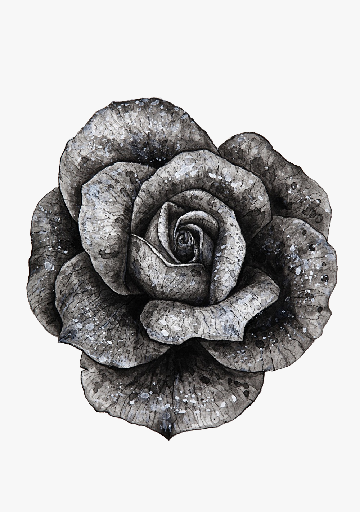

消えるのを待っている……ただ生まれる前に戻りたいんだ
視界は傾いていた。汚れた街路を漂っていた。首を吊ったことを思い出すと地に足がついて歩けるようになり、代わりに宙に浮くことはできなくなった。
すれ違う霊たちは皆無言で、視線は下方に固定されていた。
ある通りに差し掛かると、男の子がうつ伏せているのがわかった。捧げられた花束は干からびていた。

このマンションから落ちたの？
落ちてないよ。
あそこから落ちたんだろう？
違う。
ならどうしてこんなところに？
はじめからこうしてたんだ。
なんで？
小雨が降ってきた。
老朽化したビルに入り、狭く暗い階段を上がる。
壁の張り紙は剥がれ落ち床に散乱していた。
屋上の扉が開いていた。影が一つ、手すりをつかんで佇んでいた。星のない天蓋からは雨粒が落ちてきている。
ここは一体どこです？
おそらく地獄だろうね。
地獄？…………あなたはここで何をしてるんですか？
休んでるんだよ。疲れてるから休んでるのに、いくら休んでも疲れが取れない。
あなたはどこから来たんですか？
さあ忘れてしまった。君はどこから来たんだ？
あっちの方です。方角を指さすが、通りは暗く判然としない。
話をするのは久しぶりだよ。ここに慣れてくるに連れ、誰もが無口になるものだからね。
あなたは自殺したんですか？
ここに来るものは皆そうだ。
僕には信じられない、ここが地獄だなんて。
私だって信じられない。
なぜ被害者が地獄に落とされるんですか？地獄とは加害者が落ちるべきところではないのか？
手すりの影は粉塵が引火したように情念を爆発させた。
そりゃ俺だって傷つけたさ！罪のない人間なんていやしないんだからな！その通り！俺はたくさん傷つけてきた。嫌味を言ったり、からかったり、小さな非を咎め立てたり。……誰かを泣かしたこともあったな。……だがそれしきのことだ。誰かの運命を狂わせるほどのことはなかったはずだ！
……俺の犯した罪をナイフに喩えるとして、
俺はそれで100人に切り傷を負わせたとしよう。
俺はその報いを受ける。なるほど……だが、
100人のナイフが一度期に俺の胸の同じ個所を切り付けたとしたらどうなる？身が少しずつ削れて100人目では心臓に達する。
掠り傷は治る。でも心臓に空いた穴は元に戻らないんだ！
これが公平な裁きと言えるのか！
くそ忌々しい！同じ目に遭わせてやりたい！……いやいや同じ目などでは足りない。だってそうだろう？いくらあの悪魔どもが苦しむことになるからといって、それが俺に何の関係があるというんだ？言い換えればこういうことだ。こちらがこれだけ苦しむつもりなので、そちらもこれだけ苦しんでくれと、そんな申し出に同意できるわけがない！そんなもの！できるわけがない！……だから……悪魔どもには２倍３倍……いやもっと、もっと苦しんでもらわなければ困るんだ！
湿った薄明りに身を寄せて我々は話を続けた。
不幸を語り合えば気持ちが和らぐものだと思っていたが、これが永遠に続くのだとするなら、それもまた厭わしいものだった。
話している最中、時々背後にぼんやりとした影がいくつか現れ、徐々に形を成すが、はっきりした輪郭に定まるのを待たずして姿を消していった。物見高い霊たちは安らぎを求めて彷徨っていた。